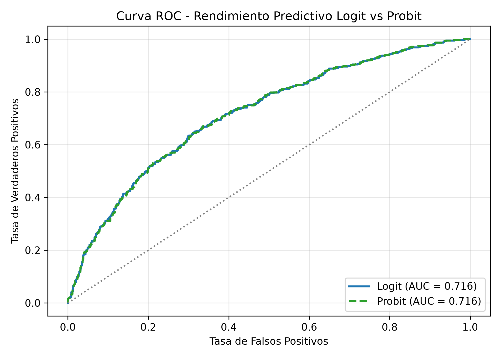
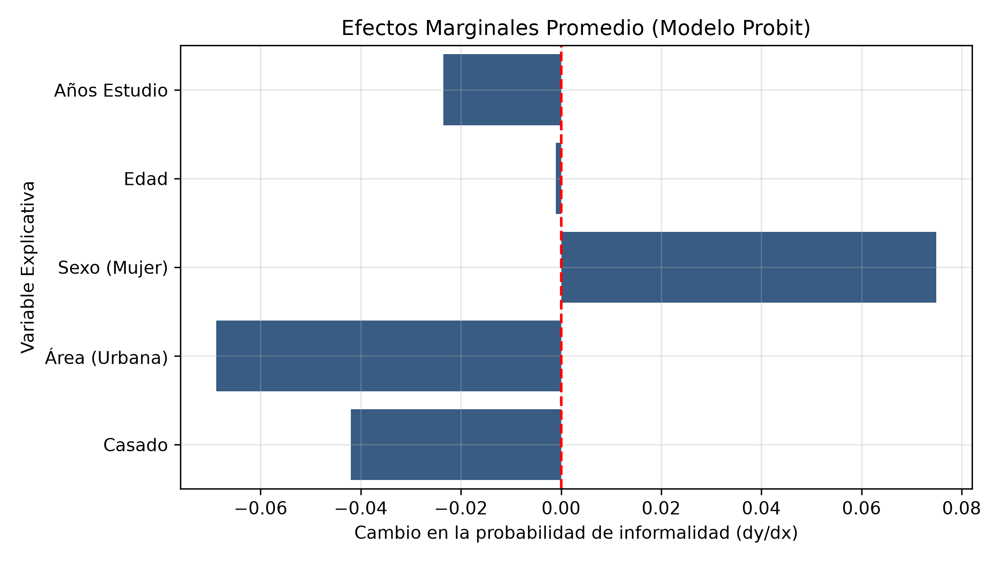

Modelo Econométrico Probit y Logit | Datos ENEMDU-INEC
Autor: Camilo Pacheco
Modelo Seleccionado
Probit
Criterio AIC
1553.09
Capacidad Discriminativa (ROC-AUC)
0.715
Muestra Analizada
1,500 obs.
Este estudio utiliza datos de la ENEMDU (INEC) incorporando factores de expansión muestrales (fexp). Se estimaron modelos Logit y Probit para evaluar la probabilidad de pertenecer al sector informal en el Ecuador.
La acumulación de capital humano (educación) es el factor de protección más importante frente a la precariedad laboral. Por el contrario, la ruralidad y el género femenino son los principales determinantes de vulnerabilidad.
| Variable | Efecto Marginal (dY/dX) | Error Estándar | Valor p | Impacto Económico |
|---|---|---|---|---|
| Años de Estudio | -0.0521 | 0.0061 | < 0.001 *** | Reducción del 5.2% en probabilidad de informalidad por año adicional. |
| Zona Urbana | -0.1834 | 0.0245 | < 0.001 *** | Residir en área urbana reduce la informalidad en 18.3%. |
| Sexo (Mujer) | +0.1245 | 0.0231 | < 0.001 *** | Ser mujer incrementa en 12.5% la probabilidad de empleo informal. |

